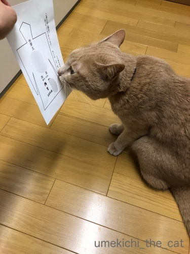
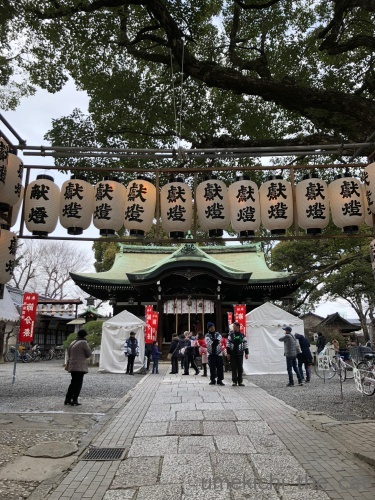
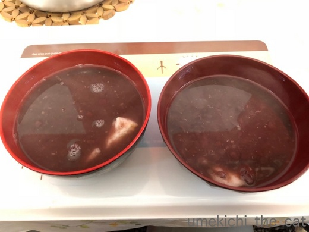
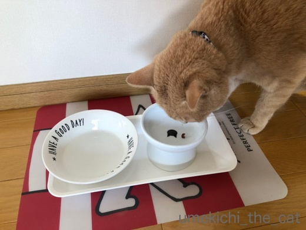
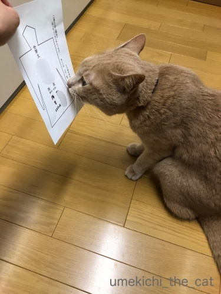
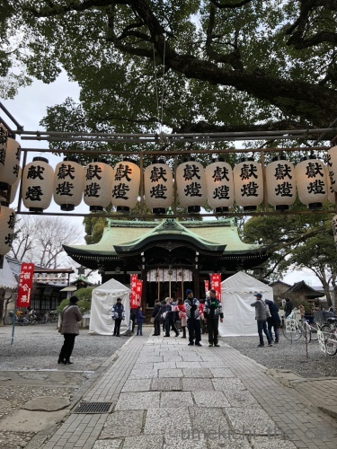
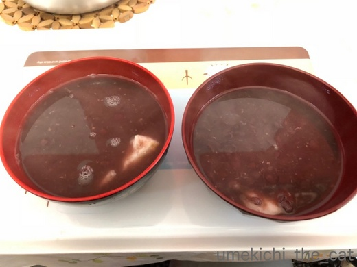
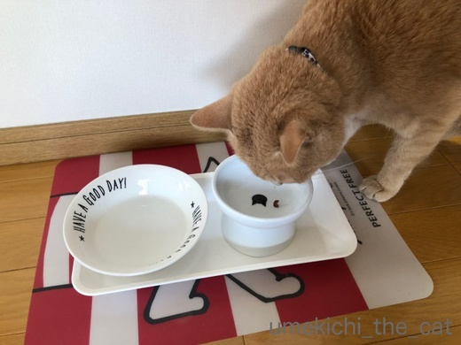

春が来た？ [梅吉]
オリンピックに夢中になっているうちに急に春めいて来た我が家地方です＾＾

![[猫]](https://blog.ss-blog.jp/_images_e/101.gif) せや！わしには はるがみえるで！！
せや！わしには はるがみえるで！！
と言っているのかは分かりませんがお外を気にする時間が長くなって来ました。
寒い時には行きたがらなかったベランダにも積極的に出て行きますよー＾＾
そして抜け毛も激しくなって来ました。
ちょっと抱っこしただけで衣類は毛だらけ！
早くも換毛期のようです。
お鼻でも春を感じているのでしょうか。ひくひくひくひく・・・・・
（12秒です）
本当のところはニンゲンのお夕食の匂いに反応しているところです (^▽^;)
街路の沈丁花の香りが漂ってくるまでもう一歩。
そして我が家の近くには春を告げるこの「のぼり」がたちました！

お相撲さんキター！！
でも今年は大阪場所のチケット取れませんでした・・・
色々あったゴタゴタでかえって注目を集めたのかな？
･゜ﾟ･*:.｡..｡.:*･゜ﾟ･*:.｡. .｡.:*･゜ﾟ･*･゜ﾟ･*:.｡..｡.:*･゜ﾟ･*:.｡..｡.:*･゜ﾟ･*
オリンピック終わっちゃいましたね。
我が家にしては連日夜更かしをして熱心に見ていたので
軽くオリンピックロス状態です。
次は２年後！！
東京オリンピックは空席の目立つ会場・・・なんてのは
無しにしたいですねー。
 ↑ガブッと一押し↑
↑ガブッと一押し↑

と言っているのかは分かりませんがお外を気にする時間が長くなって来ました。
寒い時には行きたがらなかったベランダにも積極的に出て行きますよー＾＾
そして抜け毛も激しくなって来ました。
ちょっと抱っこしただけで衣類は毛だらけ！
早くも換毛期のようです。
お鼻でも春を感じているのでしょうか。ひくひくひくひく・・・・・
（12秒です）
本当のところはニンゲンのお夕食の匂いに反応しているところです (^▽^;)
街路の沈丁花の香りが漂ってくるまでもう一歩。
そして我が家の近くには春を告げるこの「のぼり」がたちました！

お相撲さんキター！！
でも今年は大阪場所のチケット取れませんでした・・・
色々あったゴタゴタでかえって注目を集めたのかな？
･゜ﾟ･*:.｡..｡.:*･゜ﾟ･*:.｡. .｡.:*･゜ﾟ･*･゜ﾟ･*:.｡..｡.:*･゜ﾟ･*:.｡..｡.:*･゜ﾟ･*
オリンピック終わっちゃいましたね。
我が家にしては連日夜更かしをして熱心に見ていたので
軽くオリンピックロス状態です。
次は２年後！！
東京オリンピックは空席の目立つ会場・・・なんてのは
無しにしたいですねー。
オリンピック観戦ー梅吉の場合ー [梅吉]


わし、ねむいわ・・・・・
連日のオリンピック観戦。
フィギュアのくるくる回る動きとカーリングのストーンが滑って行くのを
時々じーっとみている梅吉さん。
もっとも長続きはしませんが。
競技によっては終了時刻が夜中１２時近くになるものも。
フィギュアスケートは朝から滑らなきゃならないし。
放映権を高額で買ったテレビ局の発言権でそうなっちゃうそうですが
そんな時間に合わせてピークを作る選手は大変だろうな、と思います。
東京オリンピックもそんな事情で競技時間が決められるのかな。
アスリーツ・ファーストは難しいのでしょうか・・・
左を開けたら右も開けるで！ [梅吉]
年初めに食器棚の扉を開ける事に成功した梅吉さん。
ひだりをあけたら みぎもあけなあかん
と逆サイドの扉に挑戦中です。
カリカリタッパーのありかを変えたのをちゃんと見られてました。
（９秒動画です＾＾）
怒らなきゃいけないところなんでしょうが
踏ん張るあちが面白くて大笑いしながら動画撮っちゃいましたよw
梅吉対策に貼ってあるテープがガッチリ効いていたのでこの時は開けられませんでしたが
テープが甘くなってくるとテープを狙って引きちぎるように開けちゃいます。
こうなると怒る気持ちよりも
「むむむっ！やるな！！」と褒める気持ちになる親バカ飼い主でーす。
ちゃんと怒らないから（怒っても梅吉の場合あんまり効果ないし）
キッチンでのいたずらはとどまるところを知りません。

調理中のおかーさんに茶々を入れる定位置はレンジフードの上。
興味ある食材が登場するとこんな風に身を乗り出してきて
おかーさんの頭をていていしてくるんですよ。
あれこれ熱心なのは良いのですけど火傷だけはしないでくださいよ、梅吉さん。
（火を使う時は本当に神経を使います。おかげで調理後はぐったりー。
手の込んだものはすっかり作らなくなりましたwww）
↑ガブッと一押し↑
と逆サイドの扉に挑戦中です。
カリカリタッパーのありかを変えたのをちゃんと見られてました。
（９秒動画です＾＾）
怒らなきゃいけないところなんでしょうが
踏ん張るあちが面白くて大笑いしながら動画撮っちゃいましたよw
梅吉対策に貼ってあるテープがガッチリ効いていたのでこの時は開けられませんでしたが
テープが甘くなってくるとテープを狙って引きちぎるように開けちゃいます。
こうなると怒る気持ちよりも
「むむむっ！やるな！！」と褒める気持ちになる親バカ飼い主でーす。
ちゃんと怒らないから（怒っても梅吉の場合あんまり効果ないし）
キッチンでのいたずらはとどまるところを知りません。

調理中のおかーさんに茶々を入れる定位置はレンジフードの上。
興味ある食材が登場するとこんな風に身を乗り出してきて
おかーさんの頭をていていしてくるんですよ。
あれこれ熱心なのは良いのですけど火傷だけはしないでくださいよ、梅吉さん。
（火を使う時は本当に神経を使います。おかげで調理後はぐったりー。
手の込んだものはすっかり作らなくなりましたwww）
バレンタインのハート [梅吉]
14日はバレンタイン。
日頃の感謝を込めて梅吉からみなさんに心ばかりですがハートのプレゼントを・・・

と思ったのですが梅吉さん情けない顔になっちゃってます(^▽^;)
あんまりハートが入っていないような・・・・・
ハートちゃんというより中世ヨーロッパのおばちゃんみたいだしー

中世ヨーロッパのおばちゃん（フェルメールですw)
この日はとっても寒かったので被り物があったかくて心地よかったのか
無抵抗な梅吉さん。
此れ幸いと（嫌がって）お蔵入りしていたうさぎちゃんにもチャレンジ。
やっぱり情けない顔になってます。
おバカな飼い主に付き合いきれなくなったのかシカト寝し始めた梅吉さん。
おかーさんはやっぱりそのねこくまちゃんが似合うと思いますよー！
わし もうねるー

これが一番キリッとしたお顔でした。
わしからのはーと うけとってやー
↑ガブッと一押し↑
日頃の感謝を込めて梅吉からみなさんに心ばかりですがハートのプレゼントを・・・

と思ったのですが梅吉さん情けない顔になっちゃってます(^▽^;)
あんまりハートが入っていないような・・・・・
ハートちゃんというより中世ヨーロッパのおばちゃんみたいだしー

中世ヨーロッパのおばちゃん（フェルメールですw)
この日はとっても寒かったので被り物があったかくて心地よかったのか
無抵抗な梅吉さん。
此れ幸いと（嫌がって）お蔵入りしていたうさぎちゃんにもチャレンジ。
やっぱり情けない顔になってます。
おバカな飼い主に付き合いきれなくなったのかシカト寝し始めた梅吉さん。
おかーさんはやっぱりそのねこくまちゃんが似合うと思いますよー！

これが一番キリッとしたお顔でした。
肉球の日のダンス [梅吉]


梅吉は甘党だった？ [梅吉]
二月三日の節分は近所の神社にお参り。節分の厄除けです。
形代には去年に続いてもちろん梅吉の名前も書きましたよ＾＾

息を吹きかけるのは無理なのでお鼻を三度つんつんつん。そのあと肉球をぺたっとつけます。

今年は土曜日だったので参拝の人も分散していたみたいです。
寒くておっくうになっちゃった人もいたのかな？

こちらが厄除けぜんざい。
お餅は１週間くらい前に氏子さんたちが境内でついてました。
ちょっと仲間に入りたかったなー。つきたてのおもち食べてみたい・・・
（食べたことないんですw)

梅吉のためにタッパー持参で行きましたよー。
ほんの少しだけお裾分け。
あずき、食べるんでしょうか・・・・・

ふんふんふんふん・・・・

ぺろっ

なかなか うまいもんやなぁ
お皿に入れると結構好き嫌いなく食べるんですよね (^▽^;)
おかげで梅吉も無事に厄除けが出来ました。

もらってきたお札は玄関に。
今年一年我が家を守ってくださいませm(_ _)m
↑ガブッと一押し↑
形代には去年に続いてもちろん梅吉の名前も書きましたよ＾＾

息を吹きかけるのは無理なのでお鼻を三度つんつんつん。そのあと肉球をぺたっとつけます。

今年は土曜日だったので参拝の人も分散していたみたいです。
寒くておっくうになっちゃった人もいたのかな？

こちらが厄除けぜんざい。
お餅は１週間くらい前に氏子さんたちが境内でついてました。
ちょっと仲間に入りたかったなー。つきたてのおもち食べてみたい・・・
（食べたことないんですw)

梅吉のためにタッパー持参で行きましたよー。
ほんの少しだけお裾分け。
あずき、食べるんでしょうか・・・・・



お皿に入れると結構好き嫌いなく食べるんですよね (^▽^;)
おかげで梅吉も無事に厄除けが出来ました。

もらってきたお札は玄関に。
今年一年我が家を守ってくださいませm(_ _)m


カフェオレ色の梅吉

梅吉 2023年8月10日 永眠


梅吉と出会った譲渡会

犬猫の理由なき殺処分ゼロ
妄想広告
UMEKICHI 光

爆発的に早い！
時々攻撃的！
Thanks to Mr.Boss365
爆発的に早い！
時々攻撃的！
Thanks to Mr.Boss365